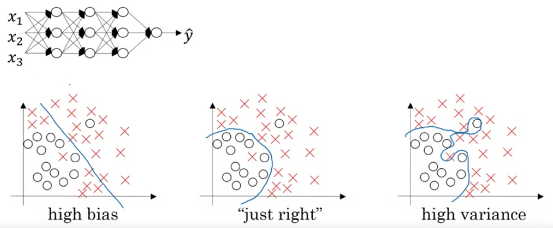
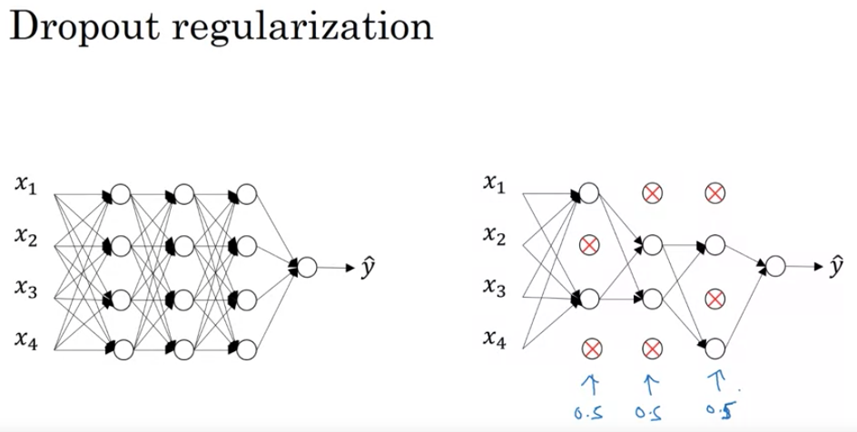

Coursera-DL • Improving Deep Neural Networks: Hyperparameter Tuning, Regularization and Optimization
- Overview
- Practical aspects of DL
- Bias / Variance
- Diagnosing and Treating Bias and Variance in Neural Networks: The Recipe-
- Weights and Bias vs Bias and Variance
- Regularization
- Intuition Behind Dropout
- Inverted dropout
- Other Techniques for Reducing Overfitting in Neural Networks
- Vanishing / Exploding gradients
- Gradient Checking in Neural Networks - Overview and Practical Tips
- Mini-batch Gradient Descent Explained
- Gradient descent with momentum
- RMSprop (Root Mean Square prop)
- Learning Rate Decay
- Hyperparameter Tuning Guidelines
- How does Batch Normalization work?
- The Mechanics of Batch Normalization:
Overview
- In this article, we will look to learn practical and best practices while training a deep neural network.
- We will look at topics such as bias/variance, L2, dropout regularization, hyperparameter tuning etc.
Practical aspects of DL
- Iterative Process of Model Development:
- Developing deep learning models often requires continuous iteration, especially when you’re figuring out the best architecture or hyperparameters.
- Factors to iterate over can include network depth, number of neurons per layer, learning rates, regularization terms, and activation functions.
- Domain-specific Intuition:
- Transferability of knowledge across domains is limited. For instance, the hyperparameters that work best for Natural Language Processing (NLP) models might not be optimal for Computer Vision (CV) tasks.
- Different applications have unique characteristics; an NLP task might be sequential, while a CV task often deals with spatial hierarchies.
- Data Splitting in the Age of Big Data:
- In traditional machine learning, a common split was 70/30 or 60/20/20 for train/dev/test sets. However, with large datasets in the deep learning era, it’s more common to see splits like 98/1/1 or even 99.5/0.25/0.25.
- The goal is to have dev and test sets large enough to provide reliable performance evaluations without unnecessarily reducing the size of the training set.
- Ensuring Consistent Distributions for Dev/Test Sets:
- While training data might come from different sources (e.g., web-crawled images vs. user-uploaded images), it’s critical that dev and test datasets come from the same distribution to ensure that model improvements generalize well to unseen data.
- This consistency ensures that performance metrics on the dev set are representative of the performance on the test set.
- Test Set: Not Always Mandatory:
- While the test set provides an unbiased evaluation of the final model, it’s sometimes omitted when such an evaluation isn’t crucial.
- Without a test set, the risk is overfitting to the dev set, making it essential to use the dev set judiciously and avoid using it excessively for hyperparameter tuning.
- Efficiency in Model Development:
- Rapid iteration is vital. The faster a model can be trained, evaluated, and refined, the quicker optimal performance can be achieved.
- Efficient dataset setup, including thoughtful allocation between train/dev/test sets and ensuring consistency in data distributions, is foundational for rapid model iteration.
- This deeper dive emphasizes the underlying technical nuances involved in setting up, training, and evaluating deep learning models in real-world scenarios.
Bias / Variance

The Essence of Bias and Variance:
- Bias: It is the error due to overly simplistic assumptions in the learning algorithm. High bias can cause an algorithm to miss the relevant patterns, leading to errors on both the training data (underfitting) and test data.
- Variance: It refers to the error due to too much complexity in the learning algorithm. High variance can cause an algorithm to model random noise in the training data, leading to a model that’s overly tailored to that data and performs poorly on new, unseen data (overfitting).
- The Evolution in Deep Learning:
- In the past, there was a widely accepted notion that there was an unavoidable trade-off between bias and variance.
- However, with the advent of deep learning and the ability to build very large neural networks, we’re finding that we can often reduce both bias and variance simultaneously, shifting away from the traditional trade-off paradigm.
- Visual Representation:
- For datasets with two dimensions:
- A high bias model might draw a straight line through a dataset that clearly has a curve or nonlinear shape. It doesn’t capture the true distribution and performs poorly.
- A high variance model might draw a wiggly curve that passes through every single data point, even the outliers, making it tailored too closely to the training data and risking poor performance on new data.
- The ideal model strikes a balance, capturing the underlying trend without being swayed by noise or outliers.
- For datasets with two dimensions:
- Diagnosing Using Errors:
- Training Set Error: A low training error might indicate the model fits the training data well, but it doesn’t reveal if the model is overfitting.
- Development Set Error (Dev Error): This is crucial for understanding how well the model generalizes to unseen data. A significant increase in dev error compared to training error typically indicates overfitting.
- Scenarios:
- High Training & Dev Errors: The model is underfitting, indicating high bias.
- Low Training Error but High Dev Error: The model is overfitting, suggesting high variance.
- Both Errors are High & Close: The model may have both high bias and variance.
- Both Errors are Low: Ideally, this indicates a well-performing model.
- The Role of Base Error:
- This concept acknowledges that some tasks inherently have a limit to how well a model can perform. For example, if images are blurry, even humans might not achieve perfect accuracy. In such cases, what might appear as high bias in a model could just be approaching this base error.
- Regions of Bias and Variance:
- Especially in models dealing with high-dimensional data, certain features or dimensions might be underfit, while others might be overfit. It’s not always a uniform issue across all aspects of the data.
- The Way Forward:
- Recognizing and diagnosing whether a machine learning model suffers from bias, variance, or both is crucial. Depending on the diagnosis, different strategies and remedies can be applied to improve the model, ensuring it not only fits the training data well but also generalizes effectively to new, unseen data.
Examples
- Bias:
- Situation: Imagine you’re trying to predict house prices based on their square footage.
- High Bias Model: You assume that the relationship between square footage and price is strictly linear. Regardless of the data, your model always predicts house prices as a simple linear function of their size.
- Reality: Houses in downtown areas might be more expensive per square foot than those in the suburbs, and luxury homes might have additional factors that increase their price. Your model doesn’t consider any of these nuances.
- Result: Both on your training data and new data, the predictions are consistently off, underestimating prices for luxury homes and overestimating for some small downtown apartments.
- Variance:
- Situation: Again, predicting house prices based on multiple features including square footage, number of rooms, proximity to services, age of the house, etc.
- High Variance Model: You use a complex model, like a deep neural network with many layers or a high-degree polynomial regression. It gives great results on your training data, capturing even tiny fluctuations.
- Reality: Some of those fluctuations in your training data were just noise (maybe a seller was particularly desperate, or a buyer particularly uninformed).
- Result: When you try to predict prices for new houses not in your training set, the model gives wild predictions. For instance, it might give extremely high price predictions for houses that just slightly resemble a luxury house in the training set or very low predictions for those resembling a cheaper sale, even if these resemblances are coincidental.
- Both High Bias and High Variance:
- Situation: Predicting weather based on various factors like temperature, humidity, wind speed, and so on. - Model with Both High Bias and High Variance:** You decide that temperature is the only factor that really matters, so you focus only on that (high bias). However, for temperatures around 70°F (21°C), you’ve noticed some very specific patterns in your training data, so you make your model extremely sensitive to tiny fluctuations in this range (high variance).
- Reality: Other factors like humidity and wind speed play a significant role in predicting the weather. Also, the specific patterns you noticed around 70°F were mostly coincidences.
- Result: The model consistently makes poor predictions (due to ignoring important factors) and occasionally makes bizarre predictions for temperatures around 70°F.
- Low Bias and Low Variance:
- Situation: Classifying emails as spam or not spam based on their content.
- Balanced Model: You use a model that considers word frequencies, certain key phrases, sender reputation, and user feedback. The model fits well to the training data without being too rigid or too flexible.
- Reality: Most spam emails have certain common patterns, but there’s always some variation and new techniques spammers employ.
- Result: The model works well on both training data and new, unseen emails, catching most spam while rarely misclassified legitimate emails.
Diagnosing and Treating Bias and Variance in Neural Networks: The Recipe-
- Diagnosis:
- High Bias Check: One must first assess the model’s performance on the training set. If the model doesn’t achieve satisfactory results on this set, it’s an indication of high bias. It means the model hasn’t even captured the nuances of the data it was trained on.
- High Variance Check: To determine if there’s a variance issue, one should evaluate how the model’s performance varies between the training set and the dev set. A significant drop in performance on the dev set (compared to the training set) indicates high variance, meaning the model may be overfitting to the training data.
- Addressing High Bias:
- High bias indicates that the model is too simplistic and is underfitting the data.
- Solutions:
- Enlarge the Neural Network: This can be achieved by adding more hidden layers or increasing the number of hidden units. A bigger network has the potential to capture more complex patterns in the data.
- Prolonged Training: Training the model for a longer time can sometimes allow it to better fit the training set.
- Advanced Optimization Algorithms: Later in the course, they would discuss more advanced optimization techniques. These methods can speed up convergence and help the model fit better.
- Experiment with Network Architecture: Different problems can benefit from various neural network structures. It’s often worth experimenting to find the best fit, even though it might require some trial and error.
- Addressing High Variance:
- High variance indicates the model might be too complex, capturing noise rather than the underlying pattern, hence overfitting.
- Solutions:
- More Data: One of the most effective ways to combat high variance is by increasing the training data. This gives the model more examples to generalize from.
- Regularization: This technique can help penalize overly complex models, thereby reducing overfitting.
- Network Architecture Tweaking: Similar to the bias problem, sometimes tweaking the network architecture can also help in reducing variance.
- Bias-Variance Tradeoff: An Evolving Perspective:**
- Historically, there was a prevalent belief in machine learning that reducing bias would invariably increase variance and vice versa. This was the essence of the bias-variance tradeoff.
- However, with the advent of deep learning, this dynamic has shifted. Now, with appropriately regularized large networks, it’s possible to reduce bias without a substantial increase in variance and vice versa. The ability to train bigger networks and procure more data has granted practitioners tools to address these problems more independently.
- Regularization’s Role:
- Regularization, a cornerstone technique in machine learning, can be a pivotal tool in the fight against variance. While it primarily helps in curbing overfitting, it’s essential to strike a balance. Over-regularization can lead the model back into the realm of high bias.
Weights and Bias vs Bias and Variance
- Weights and Biases:
- Weights: These are the values in a neural network that get adjusted through training. When input data is fed into a neural network, it gets multiplied by these weights, which are then adjusted through backpropagation based on the error of the model’s predictions.
- Biases: These are also adjustable values in a neural network, but they are added to the weighted input to shift the output of a neuron. Essentially, they allow the activation function to shift left or right.
- Bias and Variance (Bias-Variance Tradeoff):
- Bias: This refers to the error introduced by approximating a real-world problem (which might be complex) by a too-simplistic model. High bias means that the model makes strong assumptions about the data and can’t capture the underlying patterns, leading to systematic errors regardless of the specific dataset. In other words, it underfits the data.
- Variance: This refers to the error introduced by using a model that’s too complex. High variance means the model is sensitive to fluctuations in the training data and captures the noise along with the signal, leading to errors when faced with new, unseen data. It essentially overfits the training data.
- When designing machine learning models, there’s often a tradeoff:
- Low Bias, High Variance: The model fits the training data very well but doesn’t generalize well to new data.
-
High Bias, Low Variance: The model doesn’t fit the training data well and also doesn’t generalize well, but its predictions are consistent across different datasets.
-
A good model aims to balance these two types of errors to achieve low bias and low variance, leading to accurate predictions that generalize well to new, unseen data.
- In summary, “weights” and “biases” are components of the model that are adjusted during training, while “bias” and “variance” in the context of the bias-variance tradeoff refer to types of errors related to how the model generalizes from training data to unseen data.
Regularization
- Introduction to Regularization:
- Regularization is a technique often used to prevent overfitting in machine learning models.
- While obtaining more training data can help with high variance, it might not always be feasible. Regularization is a reliable alternative.
- L2 Regularization in Logistic Regression:
- In logistic regression, the cost function \(J\) is minimized to make accurate predictions. This cost function is based on the difference between the model’s predictions and the actual outcomes for training data.
- L2 regularization introduces an additional term to this cost function: \(\frac{\lambda}{2m} \times ||w||^2\). Here: \(\lambda\) is the regularization parameter. \(||w||^2\) represents the square of the Euclidean norm (or L2 norm) of the weight vector \(w\).
- Regularization mostly affects \(w\) and not \(b\) because \(w\) typically has many more parameters.
- L1 vs L2 Regularization:
- L1 regularization adds the absolute values of the weight parameters, leading to sparse weight vectors (many zero values). This can help compress the model, but its primary use is not for compression.
- L2 regularization is more commonly used in practice. L2 regularization sometimes goes by another name: “weight decay”.
- Regularization in Neural Networks:
- For neural networks, the cost function encompasses parameters across all layers. The regularization term sums up the “squared norms” of all weight matrices.
- The squared norm for a matrix, which sums up the squares of all its entries, is called the Frobenius norm.
- When implementing gradient descent with regularization, the update rule for weights slightly changes: after computing the standard gradient from backpropagation, you subtract a fraction of the weights themselves. This results in the weights shrinking in each step, hence the term “weight decay”.
-
Role of \(\lambda\): \(\lambda\), the regularization parameter, balances the trade-off between fitting the training data well and keeping the weights small to prevent overfitting. The best value for \(\lambda\) is usually determined through cross-validation.
- Understanding Weight Decay:
- Weight decay effectively multiplies the weights by a value slightly less than one during each gradient descent iteration. This ensures that weights don’t grow too large, which would make the model more likely to overfit to training data.
- Regularization, especially L2 regularization, serves as a powerful tool in the machine learning practitioner’s arsenal, offering a solution to high variance problems when acquiring additional training data is not feasible.
- Intuition Behind Regularization:
- Overfitting: When a model captures noise instead of the underlying trend in data, it tends to perform poorly on new, unseen data. This typically occurs when the model has too many parameters relative to the number of training examples, causing it to fit the training data too closely.
- Regularization Impact: Regularization discourages overly complex models by penalizing large coefficients. This can help prevent the model from fitting the training data too closely, which reduces the risk of overfitting.
- How Does Regularization Work?:
- By adding a penalty term based on the magnitude of the coefficients (typically the L2 or Frobenius norm of the weights) to the loss function, the model is discouraged from assigning too much importance to any individual feature.
- If the regularization term (lambda) is set very large, it can push the weights towards very small values. This makes the neural network simpler, potentially resembling a logistic regression model, which is less prone to overfitting.
- Activation Function Intuition:
- With the tanh activation function as an example, when the weights are small (due to regularization), the input values (Z) for the activation function tend to be small as well. This means the function operates in its linear region.
- If a neural network operates mainly in this linear region across all layers, it effectively becomes a linear model, which inherently is less likely to overfit compared to a complex, non-linear model.
- Practical Consideration:
- When implementing regularization in gradient descent, it’s essential to ensure that the newly defined cost function, including the regularization term, is used for monitoring and debugging. This is because, with the added term, the cost function should ideally decrease monotonically with each iteration of gradient descent.
- The main takeaway is that regularization helps in adding constraints to the model, thereby preventing it from becoming overly complex and fitting to the noise in the data. The added penalty for large weights pushes the model towards simplicity, which can significantly reduce the risk of overfitting, especially in deep neural networks with many parameters.
Intuition Behind Dropout

-
Random Selection of Nodes: As you’ve mentioned, dropout essentially involves going through every node in each layer during training and temporarily “dropping it out” or deactivating it with a certain probability. This means that during training, the network becomes somewhat different on every pass. As a result, each node becomes less reliant or dependent on specific features from the previous layer because they might be deactivated. In other words, it’s as if each node has to be useful on its own and can’t rely too much on its neighboring nodes.
-
Ensemble Learning Analogy: One way to think about dropout is akin to ensemble learning. When you use dropout, each iteration trains a different neural network with a different subset of nodes. Then, when you’re not using dropout during testing, it’s like averaging the output of all these networks. We know that ensemble methods, where you train multiple models and average their outputs, can be more robust than any single model. Dropout can be thought of as an inexpensive ensemble method, where you train a vast ensemble of networks all sharing the same weights.
-
Reduction of Overfitting: By randomly dropping out nodes, you’re essentially thinning your network, making it less complex. This can help prevent the network from fitting noise in the training data (overfitting) since it’s always working with a reduced capacity. This makes the model more general and robust, leading to better performance on unseen data.
-
Cost-Efficiency: Traditional ensemble methods require training multiple models which can be computationally expensive. However, with dropout, while you’re essentially training a vast ensemble, the computational cost is not much higher than training one network.
Potential Drawbacks and Considerations
-
Increased Training Time: Even though each iteration might be faster because of the thinned network, dropout often requires more epochs for the network to converge because on each pass, only a subset of the network is getting trained.
-
Not Always Beneficial: Dropout can be very effective for large networks and big datasets where overfitting is a concern. However, for smaller networks or smaller datasets, dropout might not always provide a benefit and can sometimes even harm performance.
-
Tuning Dropout Rate: The probability of dropping a node (keep probability) is a hyperparameter that might need tuning. Common values are between 0.5 and 1 (e.g., 0.5, 0.8), but the optimal value can vary depending on the dataset and network architecture.
- Dropout provides a unique and effective approach to regularization in neural networks. It’s particularly useful for complex networks trained on large datasets, where overfitting is a primary concern. Like all techniques, understanding when and how to use it effectively is key.
Inverted dropout
- Inverted dropout is the most commonly used version of dropout, primarily because it makes the test time behavior of the network simpler. Instead of scaling activations at test time, the scaling is done at training time.
Implementation of Inverted Dropout
Forward Propagation
For each layer l where you wish to apply dropout:
- Create a dropout matrix:
- Create a matrix
D[l]of the same dimension asA[l](the activations). This is done by random sampling each entry ofD[l]to be 1 with probabilitykeep_probor 0 with probability1-keep_prob.D[l] = np.random.rand(A[l].shape[0], A[l].shape[1]) < keep_prob
- Create a matrix
- Drop out units:
- Zero out the activations for which
D[l]is zero.A[l] = np.multiply(A[l], D[l])
- Zero out the activations for which
- Scale the activations:
- This step ensures that the expected value of the activations remains the same, avoiding the need to do any scaling at test time.
A[l] = A[l] / keep_prob
- This step ensures that the expected value of the activations remains the same, avoiding the need to do any scaling at test time.
Backward Propagation
For layers where dropout was applied:
- Apply the dropout mask to the gradients:
- This ensures that the units that were dropped out during forward propagation don’t contribute to the gradients.
dA[l] = np.multiply(dA[l], D[l])
- This ensures that the units that were dropped out during forward propagation don’t contribute to the gradients.
- Scale the gradients:
- This step scales down the gradients by the same factor as during forward propagation.
dA[l] = dA[l] / keep_prob
- This step scales down the gradients by the same factor as during forward propagation.
Test Time
- There’s no need to apply dropout or scale the activations. The network is used as-is.
Notes
-
The dropout rate (i.e.,
1 - keep_prob) is typically set between 0.2 and 0.5. However, you should experiment with different values for your specific problem and network architecture. -
Dropout is more commonly used in fully connected layers rather than convolutional layers.
-
Remember to turn off dropout during validation/testing. The idea is that dropout is a regularization technique applied only during training.
-
The “inverted” part of inverted dropout refers to the scaling done during training rather than during testing. Regular dropout without this inversion scales the activations at test time, which is computationally inefficient.
- In frameworks like TensorFlow and PyTorch, dropout (including inverted dropout) is often available as a built-in layer or function, simplifying its application.
- Dropout is a regularization technique where units in a neural network are randomly deactivated during training. Here’s a breakdown of the primary insights and considerations:
- Intuition Behind Dropout:
- Network Perspective: By randomly deactivating units, the network behaves as a smaller version of itself during each iteration, adding a regularizing effect.
- Unit Perspective: A specific unit can’t overly rely on any single input because that input could be deactivated at any given time. This forces the unit to distribute its weights among all its inputs, which tends to reduce the magnitude of weights and, as a result, acts as a form of regularization similar to L2.
- Dropout as Adaptive L2 Regularization:
- Dropout can be shown to resemble L2 regularization but in a more adaptive form. The penalty on different weights can differ based on the activations.
- Layer-specific Dropout:
- Different layers can have different dropout rates (
keep_prob). For example, layers with many parameters that are more prone to overfitting can have a higher dropout rate. - You can also apply dropout to the input layer, though this isn’t as common.
- Different layers can have different dropout rates (
- Implementation Tips:
- Dropout has been particularly beneficial in computer vision because of the vast input size relative to the available training data. However, its utility might differ in other domains.
- One of the main challenges with dropout is that it makes the cost function J not well-defined, making it harder to verify if gradient descent is working correctly. It’s common practice to turn off dropout (set
keep_probto 1) to ensure that J decreases monotonically, then reintroduce dropout.
- The takeaway is that while dropout offers a powerful regularization technique, especially useful in scenarios like computer vision where overfitting is common, it needs to be used judiciously. Proper tuning and understanding its impact on the model’s performance are essential.
Other Techniques for Reducing Overfitting in Neural Networks
- Data Augmentation:
- Can be useful when acquiring more data is difficult or expensive.
- Examples:
- Flipping images horizontally to double the training set size.
- Random crops and distortions of the image.
- Not as effective as acquiring new, independent examples, but it’s cost-efficient.
- The core idea is that certain transformations of data still represent the same class. E.g., a flipped image of a cat is still an image of a cat.
- For optical character recognition, applying random rotations and distortions to digits is an example of data augmentation.
- Early Stopping:
- Monitor the training error and development (dev) set error.
- Training error typically decreases monotonically.
- Dev set error decreases initially and may increase when the model starts overfitting.
- Stop the training when the dev set error starts increasing.
- Works because early in training, parameters (w) will be close to zero (small), resulting in a simpler model. As training continues, parameters may grow, leading to a potentially more complex model that might overfit.
- The term “early stopping” refers to halting the neural network training earlier than planned.
- Issues with Early Stopping:
- Orthogonalization: It’s beneficial to have separate tools to (a) minimize cost function and (b) prevent overfitting. Early stopping combines these tasks, complicating the optimization process.
- An alternative is using L2 regularization and training the neural network extensively.
- A potential downside to L2 regularization is the need to try many values of the regularization parameter (lambda), making it computationally expensive.
- Early stopping’s advantage is it allows for trying small, mid-size, and large parameter values without varying lambda.
Normalizing Input Features
- Why Normalize:
- Normalization of inputs can speed up the convergence of training algorithms like gradient descent, resulting in quicker training times.
- When features have different scales (e.g., one feature ranges from 1-1000 while another from 0-1), the cost function will be stretched in certain directions, leading to a more elongated and inefficient path for the optimization algorithm.
-
Steps to Normalize:
a. Zero-Centering: - Compute the mean \(\mu\) of the training set, where: \(\mu = \frac{1}{M} \sum_{i} x_i\) - Subtract the mean \(\mu\) from every training example. This translates the dataset such that the mean is centered at zero: \(x = x - \mu\)
b. Normalize Variances: - After zero-centering, compute the variance. For each feature, you square its value, and then take the average across all examples: \(\sigma^2 = \frac{1}{M} \sum x_i^2\) - Here, \(x_i^2\) is element-wise squaring. - Normalize the data by dividing each feature by its standard deviation (which is the square root of variance). Essentially, this scales the data to have a unit variance: \(x = \frac{x}{\sigma^2}\)
- Effects on Cost Function:
- Without normalization, the cost function may resemble an elongated bowl, making optimization algorithms take longer zig-zag paths to find the minimum.
- Post-normalization, the cost function is more symmetric, resembling a more circular bowl, allowing optimization algorithms to find the minimum more directly and quickly.
- Using Same Parameters for Test Set:
- It’s crucial to use the same normalization parameters (mean and variance) derived from the training set to normalize the test set.
- Do not compute these parameters separately for the test set; always use the ones from the training set to ensure consistent data transformation.
- Rationale:
- When features are on different scales, the parameters associated with each feature will need to cover very different ranges, causing the elongated shape of the cost function. By normalizing, all features and their associated parameters are on similar scales, making the cost function more symmetric.
- Normalization makes your algorithm less sensitive to the scale of features, making training more robust.
- When to Normalize:
- If features have very different scales or ranges, normalization is crucial.
- If they’re already on similar scales, normalization might be less critical but rarely does any harm. Often, it’s still beneficial for ensuring consistent training behavior.
- Normalizing input features is a preprocessing step that can considerably speed up the training process by reshaping the cost function, making it easier and faster for optimization algorithms to converge.
Vanishing / Exploding gradients
-
In training deep neural networks, a prominent challenge faced is the vanishing and exploding gradient problem. This issue arises when the gradients (or derivatives) become extremely small (vanishing) or extremely large (exploding) as the network gets deeper. These extremes can severely hinder the training process, making it difficult or even impossible for the network to converge to a solution.
- The Problem:
- For very deep networks, the activation outputs can grow (explode) or reduce (vanish) rapidly, growing or shrinking exponentially with the depth of the network.
- Using a linear activation function as an example, and ignoring biases, the output \(Y\) can be expressed as a product of all the weight matrices from \(W_1\) to \(W_L\) times the input \(X\).
- If each weight matrix is slightly larger than the identity (e.g., scaled by 1.5), the activations grow exponentially with the depth \(L\). This results in the exploding gradient problem.
- Conversely, if each weight matrix is slightly smaller than the identity (e.g., scaled by 0.5), the activations shrink exponentially, leading to the vanishing gradient problem.
- Similar exponential growth or reduction can also be observed in the gradients (derivatives) when backpropagating through the network, making the learning process ineffective.
- Significance:
- Deep networks, such as those with 150 or more layers, have been employed with success in recent years. However, if gradients explode or vanish exponentially based on the network’s depth, they can either become too big (causing numerical instability) or too small (making learning extremely slow).
- For a long time, this challenge presented a significant barrier in training very deep networks.
- Partial Solution:
- A potential solution to mitigate these problems is careful weight initialization. Choosing the right strategy to initialize weights can significantly alleviate the vanishing and exploding gradient issues.
-
Deep neural networks can be afflicted by vanishing or exploding gradients, making training challenging. A partial remedy lies in a judicious choice of random weight initialization.
- Weight Initialization for a Single Neuron:
- Taking a neuron with \(n\) inputs (features) as an example:
- The weighted sum \(z\) is the summation of the product of each input \(x_i\) and its corresponding weight \(w_i\).
- To ensure \(z\) doesn’t grow extremely large or small, the more inputs (or the larger \(n\) is), the smaller each weight \(w_i\) should be. This ensures that the sum remains in a reasonable range.
- A suggested approach is to set the variance of each \(w_i\) as \(\frac{1}{n}\).
- Taking a neuron with \(n\) inputs (features) as an example:
- Weight Initialization for Deep Networks:
- The weight matrix \(W\) for a layer can be initialized using the formula:
np.random.randn(shape) * sqrt(2/n_(l-1)), where \(n_(l-1)\) is the number of inputs to the neuron in the current layer. - For a ReLu activation function, it’s been found that using a variance of \(\frac{2}{n}\) is more effective.
- The reasoning for this initialization approach is to ensure the weighted sum \(z\) remains at a scale that neither vanishes nor explodes too quickly, thus helping mitigate the gradient problem.
- The weight matrix \(W\) for a layer can be initialized using the formula:
- Variations in Initialization:
- For a TanH activation function: Initialization called “Xavier initialization” suggests using \(\frac{1}{n}\) instead of \(\frac{2}{n}\).
- There are other methods suggested in research, but for ReLu (most common activation function), the above method is recommended. For TanH, Xavier initialization is suggested.
- The variance in the initialization can be treated as a hyperparameter. Adjusting this hyperparameter can sometimes improve performance, but it’s not typically the first choice in tuning.
- Proper weight initialization can help in keeping gradients in check for deep networks, making training faster and more effective.
Gradient Checking in Neural Networks - Overview and Practical Tips
- **Gradient Checking Overview: **
- Gradient checking is a technique used to verify if the gradients (derivatives) calculated by the backpropagation algorithm are correct. The idea is to approximate the gradient of each parameter by tweaking it slightly and observing the change in the cost function. The computed gradient and this approximation should be close if backpropagation is implemented correctly.
-
Practical Tips:
-
Not for Training: Don’t use gradient checking during regular training because of its computational intensity. It’s designed mainly for debugging. Once you’ve ensured your backpropagation gradients are close to the approximated ones, deactivate gradient checking.
-
Debugging with Component Analysis: If gradient checking fails (i.e., if the approximated and computed gradients differ significantly), analyze each component. Examining specific components, like \(dW\) or \(db\) for various layers, can hint at where a potential error lies.
-
Remember Regularization: If using regularization in your cost function, make sure the gradient checking process incorporates the regularization term. The gradients should be computed for the entire cost function, including this term.
-
Dropout Challenges: Gradient checking is inconsistent with dropout. Since dropout randomly turns off certain nodes during iterations, a consistent cost function is challenging to compute. Generally, turn off dropout when performing gradient checking and then turn it back on for regular training.
-
Potential Limitations with Large Weights and Biases: On rare occasions, backpropagation might be accurate only when weights (W) and biases (b) are near their initial values. To counter this, you might run gradient checking after several training iterations, allowing weights and biases to adjust from their initial values.
-
- In summary, gradient checking is an invaluable tool for verifying the accuracy of the backpropagation algorithm. However, due to its computational demand, use it judiciously and typically without dropout. Remember to include any regularization terms when performing checks.
Mini-batch Gradient Descent Explained
- When training neural networks, especially with large datasets, the process can be slow using traditional methods like batch gradient descent which processes the entire training set before making an update. An alternative and faster method is mini-batch gradient descent. This technique divides the dataset into smaller “mini-batches” and performs an update for each mini-batch.
- For instance, if you have a dataset of 5 million examples, instead of processing all of them at once, you might break them into mini-batches of 1,000 examples each. This means that for every pass through the dataset (an “epoch”), you would make 5,000 updates with mini-batch gradient descent instead of just one with the traditional method.
- To implement mini-batch gradient descent:
- Split the data into mini-batches, e.g., X1 through X1000, X1001 through X2000, and so on.
- For each mini-batch, perform forward propagation using only the data in that mini-batch.
- Compute the cost function for that mini-batch.
- Implement backpropagation to compute gradients.
- Update the weights and biases using the gradients.
- Enables progress in gradient descent even when only partially through the training set.
- With batch gradient descent, cost should decrease every iteration.
- For mini-batch gradient descent, cost might not decrease every iteration due to different training batches.
- Cost function J should generally trend downwards but may oscillate due to varying difficulty of mini-batches.
Batch Gradient Descent vs. Stochastic Gradient Descent
- When mini-batch size \(m\) equals training set size, it’s batch gradient descent.
- When mini-batch size is 1, it’s called stochastic gradient descent.
- Each example is its own mini-batch.
- Takes gradient descent steps with one example at a time.
Behavior of Gradient Descent Algorithms
- Batch gradient descent: Takes consistent steps toward minimum.
- Stochastic gradient descent: Noisy, oscillates around the minimum but won’t converge to it.
- Mini-batch gradient descent: Somewhere in-between; tends to head toward the minimum but might oscillate slightly.
Choosing Mini-batch Size
- For small training sets (e.g., <2000), use batch gradient descent.
- For larger sets, sizes between 64 to 512 (preferably powers of 2) are typical.
- Ensures compatibility with computer memory layout.
- Important: Ensure each mini-batch fits in CPU/GPU memory.
Efficiency & Speed
- Mini-batch gradient descent can be faster due to vectorization across examples.
- Progress is made without processing the entire training set.
- Adjusting learning rate or “learning rate decay” can refine the algorithm, but that’s covered later.
- Mini-batch size is a hyperparameter; trying different values can optimize performance.
Gradient descent with momentum
- Momentum, or gradient descent with momentum, typically works faster than standard gradient descent.
- It computes an exponentially weighted average of the gradients, and then uses that gradient to update the weights.
- Problem with Standard Gradient Descent:
- For certain cost functions, gradient descent might oscillate a lot before reaching the minimum. This oscillation slows down the process and prevents using a larger learning rate.
- Gradient Descent with Momentum:
- During iteration, you compute the usual derivatives (
dw,db) based on the mini-batch. - Then you compute a moving average of these derivatives:
- \[vdW = \beta * vdW + (1-\beta) \times dW\]
- \[vdb = \beta * vdb + (1-\beta) \times db\]
- Instead of updating the weights using
dW, you update them withvdW.
- During iteration, you compute the usual derivatives (
- Advantages of Momentum:
- Momentum averages out the oscillations.
- In a vertical direction, oscillations are reduced because positive and negative numbers average out.
- In a horizontal direction, the movement remains aggressive, which speeds up the descent.
- An analogy: Think of a ball rolling down a hill. Derivatives provide acceleration while momentum terms represent velocity. The ball accelerates down the hill, gaining momentum.
- Momentum averages out the oscillations.
- Implementation Details:
- Two hyperparameters are important: the learning rate (
α) andβ, which controls the exponentially weighted average. β = 0.9is a common and robust choice, effectively averaging the gradients over the last ten iterations.- Bias correction (dividing by
1-β^t) isn’t usually done after about ten iterations. - Initial values:
vdWis initialized as a matrix of zeroes with the same dimension asdW, andvdbas a vector of zeroes, same dimension asdb.
- Two hyperparameters are important: the learning rate (
- Different Formulations:
- Some literature omits the
(1-β)term. The impact of this is thatvdWandvdbare scaled differently, affecting the optimal learning rate. - The prefered version of the formulation is with the following
(1-β)term.
- Some literature omits the
- **Conclusion: **
- Gradient descent with momentum typically performs better than standard gradient descent.
- There are still other optimization methods to explore.
RMSprop (Root Mean Square prop)
- RMSprop is another algorithm that can enhance gradient descent. If gradient descent is visualized, large oscillations can occur in the vertical direction while progress is made in the horizontal direction. For intuitive understanding, let’s label the vertical axis as
band the horizontal axis asw. - RMSprop Mechanism:
- On iteration
t, compute the derivativedWanddbfor the current mini-batch. - Maintain an exponentially weighted average of the squared derivatives:
- \[S_{dW} = \beta S_{dW} + (1-\beta) dW^2\]
- \[S_{db} = \beta S_{db} + (1-\beta) db^2\]
- Note: Squaring is element-wise.
- Update the parameters:
- \[W = W - \alpha \frac{dW}{\sqrt{S_{dW} + \epsilon}}\]
- \[b = b - \alpha \frac{db}{\sqrt{S_{db} + \epsilon}}\]
- On iteration
- Intuition Behind RMSprop:
- We aim to fast-track learning in the
w(horizontal) direction and dampen oscillations in theb(vertical) direction. - With
S_{dW}andS_{db}, if derivatives are larger vertically (bdirection),S_{db}will be large, leading to smaller updates in thebdirection. Conversely, updates in thewdirection will be faster sinceS_{dW}would be smaller. - RMSprop will cause updates that dampen oscillations in directions with high oscillations.
- We aim to fast-track learning in the
- **Clarification: **
- The vertical and horizontal directions (
bandw) are used for illustration. In real scenarios, there are high-dimensional spaces of parameters. The essence is that, in dimensions with oscillations, a more considerable weighted average of squared derivatives is computed, damping those oscillations.
- The vertical and horizontal directions (
- RMSprop Details:
- The algorithm is termed RMSprop because it squares the derivatives and then takes their square root.
- To differentiate from the momentum’s hyperparameter, RMSprop’s hyperparameter is labeled
beta2. - For numerical stability, a small epsilon is added to the denominator to avoid division by zero. A default could be \(10^{-8}\).
- Impact of RMSprop:
- It dampens oscillations in gradient descent, especially in mini-batch gradient descent.
- It allows for potentially larger learning rates,
α, and accelerates the learning process. - Trivia:
- RMSprop was first introduced in a Coursera course by Jeff Hinton, not in a research paper. It gained popularity from this course.
Adam Optimization Algorithm
- Adam (Adaptive Moment Estimation) is a fusion of the ideas behind Momentum and RMSprop, two optimization techniques. It is widely used due to its robustness and adaptability to various deep learning architectures.
Concepts
- Momentum
- Aims to speed up the optimization by considering the past gradient. \(V_{dw} = \beta_1 V_{dw} + (1-\beta_1) \times dw\) \(V_{db} = \beta_1 V_{db} + (1-\beta_1) \times db\)
- RMSprop
- Adjusts the learning rate by using the moving average of the squared gradient. \(S_{dw} = \beta_2 S_{dw} + (1-\beta_2) \times dw^2\) \(S_{db} = \beta_2 S_{db} + (1-\beta_2) \times db^2\)
Bias Correction
-
For
V(Momentum): \(V_{dw\_corrected} = \frac{V_{dw}}{1 - \beta_1^T}\) \(V_{db\_corrected} = \frac{V_{db}}{1 - \beta_1^T}\) -
For
S(RMSprop): \(S_{dw\_corrected} = \frac{S_{dw}}{1 - \beta_2^T}\) \(S_{db\_corrected} = \frac{S_{db}}{1 - \beta_2^T}\)
Parameter Update
- The weights and biases are updated using both corrected momentum and RMSprop terms. \(W = W - \alpha \times \frac{V_{dw\_corrected}}{\sqrt{S_{dw\_corrected}} + \epsilon}\) \(b = b - \alpha \times \frac{V_{db\_corrected}}{\sqrt{S_{db\_corrected}} + \epsilon}\)
Hyperparameters
- \(\alpha\): Learning rate (needs tuning).
- \(\beta_1\): Typically 0.9 (Momentum term).
- \(\beta_2\): Recommended 0.999 (RMSprop term).
- \(\epsilon\): Usually \(10^{-8}\) (avoids division by zero).
Learning Rate Decay
- Purpose: Slowly reduce the learning rate over time.
- Reason: When implementing mini-batch gradient descent with small mini-batches, the steps can be noisy and the algorithm might never converge.
- Intuition: Start with larger steps initially (when learning rate is high) and take smaller steps as you approach convergence.
Methods for Implementing Learning Rate Decay
- Standard Decay:
- Formula:
- Example:
- Given: \(\alpha_0 = 0.2\) and decay-rate = 1
- First epoch: \(\alpha = 0.1\)
- Second epoch: \(\alpha = 0.067\)
- and so on…
- Exponential Decay:
- Formula: \(\alpha = 0.95^{\text{epoch-num}} \times \alpha_0\)
- This results in a rapid decay of the learning rate.
- Other Formulae:
- \[\alpha = \frac{k}} \times \alpha_0}\]
- \(\alpha = \frac{k}} \times \alpha_0\) (Where t is the mini-batch number).
- Discrete Staircase:
- Learning rate decreases in discrete steps. For example, after a certain number of steps, the learning rate is halved.
- Manual Decay:
- If training a single model over many days, some practitioners manually adjust the learning rate when they perceive the learning has slowed down.
Considerations
- Learning rate decay is lower in the priority list of hyperparameters to adjust. First, focus on setting an appropriate initial learning rate.
- Systematic methods for choosing among various hyperparameters will be discussed later.
- While learning rate decay can help speed up training, tuning the primary learning rate has a more significant impact.
Hyperparameter Tuning Guidelines
- Overview of Hyperparameters in Neural Networks:
- Deep learning requires tuning several hyperparameters:
- Learning rate (α)
- Momentum term (β)
- Hyperparameters for the Adam Optimization Algorithm: β1, β2, and ε
- Number of layers
- Number of hidden units
- Learning rate decay
- Mini-batch size
- Deep learning requires tuning several hyperparameters:
- Hyperparameter Importance:
- Primary Importance: Learning rate (α) is the most crucial hyperparameter.
- Secondary Importance: Momentum term, mini-batch size, and number of hidden units.
- Tertiary Importance: Number of layers and learning rate decay.
- Seldom Tuned (for Adam algorithm): β1 (usually 0.9), β2 (usually 0.999), and ε (usually 10^-8).
- Hyperparameter Sampling Strategies:
- Traditional Sampling: Earlier machine learning algorithms sampled hyperparameters in a grid format. For two hyperparameters, all combinations in the grid were tried.
- Random Sampling: For deep learning, it’s recommended to choose hyperparameter combinations randomly. This is more effective because:
- Some hyperparameters have a more significant effect than others.
- By sampling randomly, you can explore a broader range of values for the essential hyperparameters.
- Coarse to Fine Sampling Scheme: Start with a broad range (coarse sampling). Once you identify a promising region, zoom in and sample more densely within that region (fine sampling).
- Advantage of Random Sampling:
- Allows a richer exploration of crucial hyperparameters.
- It is especially useful when you don’t know which hyperparameters will be most critical for your problem.
- Coarse to Fine Sampling:
- Identify potential regions where hyperparameters seem to work best.
- Zoom into these regions and sample more densely.
- Helps to refine and get closer to optimal hyperparameter values.
- Key Takeaways:
- Prefer random sampling over grid-based sampling for hyperparameters in deep learning.
- Consider using a coarse to fine sampling strategy.
- The next topic will discuss choosing the right scale for sampling hyperparameters.
Sampling Hyperparameters
- Introduction to Hyperparameter Sampling:
- It’s important to note that when sampling hyperparameters randomly, it doesn’t always mean sampling uniformly over the range of valid values.
- The scale on which hyperparameters are explored can significantly affect the efficiency of the search.
- Examples of Uniform Sampling:
- In cases like determining the number of hidden units within a layer or the number of layers in a neural network, uniform sampling might be appropriate. For instance:
- If considering between 50 and 100 hidden units, simply pick numbers randomly from this range.
- If deciding between 2 to 4 layers, sampling randomly between these values or even using grid search can work.
- In cases like determining the number of hidden units within a layer or the number of layers in a neural network, uniform sampling might be appropriate. For instance:
- The Case of the Learning Rate (alpha):
- When sampling the learning rate, a range between 0.0001 and 1 is discussed.
- If sampled uniformly, around 90% of the chosen values will fall between 0.1 and 1. This isn’t efficient.
- A more effective method is to sample on a logarithmic scale. For instance, consider values like 0.0001, 0.001, 0.01, 0.1, and 1, and sample randomly on this log scale.
- In Python, you’d achieve this by setting
r = -4 * np.random.rand()and then determining alpha withalpha = 10 r.
- Generalized Method for Logarithmic Sampling:
- If trying to sample between two values on a log scale, first identify the powers of 10 that define your range.
- Use the log base 10 of your smallest and largest values to define your range (a to b).
- Sample
rrandomly between these values (aandb). - Your hyperparameter is then set to
10^r.
- Sampling the Exponential Weighting Hyperparameter (Beta):
- Beta is used for calculating exponentially weighted averages.
- If considering beta values between 0.9 and 0.999, it’s inefficient to sample linearly.
- Instead, focus on 1-beta which will have a range between 0.1 to 0.001.
- For efficient sampling, the idea is to use the logarithmic approach again, but this time inverted, with larger values on the left.
- Sample
rfrom -3 to -1. Then calculate1-betaas10^rand subsequently find beta withbeta = 1 - 10^r. - This approach gives a balanced exploration for beta values, distributing resources evenly over the range.
- Rationale Behind the Sampling Process:
- When beta is near 1, even minor variations can have significant impacts. For instance:
- Shifting beta from 0.9 to 0.9005 has minimal effect.
- But shifting beta from 0.999 to 0.9995 drastically changes the results.
- The formula
1 / (1 - beta)is highly sensitive to minor changes in beta when it’s near 1. - This specialized sampling approach allows for denser sampling when beta is near 1, ensuring efficient hyperparameter search.
- When beta is near 1, even minor variations can have significant impacts. For instance:
- Concluding Thoughts:
- The main goal is to sample hyperparameters efficiently, focusing on regions with higher sensitivity.
- Even if the sampling isn’t perfect, using a “coarse to fine” method can help. Start broad and refine the range in subsequent iterations based on insights.
Organizing Your Hyperparameter Search Process
- Introduction:
- Hyperparameters play a critical role in deep learning model performance.
- Deep learning applications vary, and hyperparameters suitable for one domain might not be ideal for another.
- Cross-fertilization among Domains:
- Ideas from one domain often inspire improvements in another.
- Examples: Techniques developed in computer vision (like Confonets or ResNets) have been applied to speech. Similarly, methods originated in speech have found applications in NLP. - Deep learning researchers increasingly explore findings across various domains for innovative solutions.
- Changing Nature of Hyperparameter Intuitions:
- Intuitions about the best hyperparameters can become outdated due to various reasons:
- Continued algorithm development.
- Gradual changes in data over time.
- Infrastructure changes, like server upgrades. - Regularly re-evaluate hyperparameters (every few months) to ensure they remain optimal.
-
Two Predominant Approaches to Hyperparameter Search:
a. Babysitting One Model (Panda Approach):
- Most suitable for scenarios with vast data but limited computational resources.
- Process:
- Begin with random parameter initialization.
- Monitor the model’s learning curve, adjusting hyperparameters as required.
- Make incremental changes daily or even hourly, observing the impact on the model’s performance.
- If certain hyperparameters prove detrimental, revert to a previous configuration.
- It’s an ongoing, intensive process where the model’s performance is actively observed and adjusted.
b. Training Many Models in Parallel (Caviar Approach):
- Ideal for those with significant computational resources.
- Process:
- Simultaneously train multiple models with varied hyperparameters.
- Each model produces a distinct learning curve.
- At the end of the training period, compare the performances and select the best model.
- Analogously, this approach is likened to how certain fish lay numerous eggs in hopes a few survive, compared to mammals that have fewer offspring but tend to them closely.
- Choosing Between the Approaches:
- The best approach depends on available computational resources.
- The caviar approach is preferable when abundant computational capacity is available to test multiple hyperparameters at once.
- However, in scenarios with massive datasets and resource-intensive models, the panda approach, where one invests significantly in fine-tuning a single model, might be more feasible.
- Final Thoughts:
- Both approaches have their strengths and applications.
- Regardless of the chosen approach, it’s essential to be adaptive and flexible in the search for optimal hyperparameters.
BatchNorm
- Batch normalization (often abbreviated as BatchNorm) is a vital technique in deep learning. Introduced by Sergey Ioffe and Christian Szegedy, this method streamlines the hyperparameter search, enhances the robustness of neural networks, and broadens the range of efficient hyperparameters. Furthermore, it significantly aids in training very deep networks.
How does Batch Normalization work?
When training models like logistic regression, it’s widely known that normalizing the input features can speed up learning. This process involves calculating the means and variances, then adjusting your data based on these metrics. Such normalization can transform the contours of your learning problem, making it more suited for gradient descent optimization.
For deep neural networks with multiple layers, each having its activations, the question is:
“Can we normalize activations from any hidden layer to optimize the training of subsequent parameters?”
- That’s where batch normalization enters the scene.
The Mechanics of Batch Normalization:
Instead of normalizing the activations a, batch normalization typically normalizes the values z (before the activation function). Here’s the process:
-
Compute the mean:
$$\mu = \frac{1}{m} \sum_{i=1}^{m} z^{[i]}$$ -
Compute the variance: \(\sigma^2 = \frac{1}{m} \sum_{i=1}^{m} (z^{[i]} - \mu)^2\)
-
Normalize the values: \(z_{norm}^{[i]} = \frac{z^{[i]} - \mu}{\sqrt{\sigma^2 + \epsilon}}\) Where
epsilonis added for numerical stability. -
Scale and shift the normalized values: \(z_{tilde}^{[i]} = \gamma z_{norm}^{[i]} + \beta\) Where
gammaandbetaare learnable parameters.
-
By adjusting
gammaandbeta, the mean and variance of the hidden units can be controlled. Settinggammato the square root of \(\sigma^2 + \epsilon\) andbetatomumakes the batch normalization equivalent to the identity function. However, varying these parameters allows the hidden units to adopt other means and variances. -
Batch normalization applies this process not only to the input layer but also to deep hidden layers. This ensures that hidden units have a standardized mean and variance, controlled by
gammaandbeta.
You’ve provided a detailed overview of Batch Normalization (Batch Norm) and its application in deep neural networks. Here’s a succinct summary:
Batch Normalization (BatchNorm) in Deep Neural Networks:
-
Purpose: To accelerate training, improve generalization, and allow higher learning rates.
- Implementation:
- For each mini-batch:
- Compute the mean and variance of the activations (\(Z\)).
- Normalize the activations using these statistics.
- Scale and shift the normalized activations using two parameters, \(\beta\) and \(\gamma\), which are learned during training.
- For each mini-batch:
- Parameters:
- Traditional Neural Network: Uses weights (\(W\)) and biases (\(B\)).
- With Batch Norm: Still uses weights (\(W\)) but replaces the role of biases (\(B\)) with \(\beta\). Also introduces a scaling factor \(\gamma\). So, the parameters become W, \(\beta\), and \(\gamma\).
- Parameter Update:
- Update \(W\) using standard backpropagation.
- Learn \(\beta\) and \(\gamma\) using derivatives (D\(\beta\) and D\(\gamma\)) derived from the cost function.
- These parameters can be updated using standard gradient descent or other optimization techniques like Adam or RMSprop.
- Advantages:
- Helps handle the internal covariate shift.
- Normalizes the activations throughout the training process, ensuring that they don’t reach extremely high or low values, which can decelerate the learning.
- **Elimination of bias term: **
- Since Batch Norm centers activations around zero mean, the bias term \(B\) becomes redundant and can be removed or set to zero.
- Compatibility:
- Batch Norm can be used with other optimization techniques, such as momentum, RMSprop, or Adam, making it versatile.
- **Practicality: **
- In most modern deep learning frameworks, Batch Norm is implemented, so users don’t often have to code it from scratch.
- It usually requires just one line of code to implement in these frameworks.
- **How it Fits in Deep Neural Networks: **
- After computing Z (before activation), apply Batch Norm.
- Then, apply the activation function to get \(A\).
- This process is repeated for each layer where Batch Norm is used.
- **Note on Confusion with \(\beta\) Terminology: **
- \(\beta\) in Batch Norm isn’t the same as \(\beta\) in optimization algorithms like momentum or Adam.
- As we’ve seen, batch normalization (batch norm) is a technique used to improve the speed, performance, and stability of neural networks.
- Why Batch Norm Works:
- Feature Scaling: Normalizing input features to have a mean of zero and variance of one can accelerate the learning process. Batch norm extends this idea by normalizing the values within the hidden layers, not just the input features.
- Robustness to Weights’ Changes: Deep neural networks can be sensitive to changes in weights in earlier layers, which might impact weights in subsequent layers. Batch norm makes the deeper layers less sensitive to such changes.
- Covariate Shift:
- When the distribution of input data changes, it can impact a model’s performance. This is termed ‘covariate shift’. In the context of neural networks, as weights in early layers change, values to subsequent layers also change, leading to a sort of internal covariate shift.
- What Batch Norm Does:
- For any given layer in the neural network, batch norm ensures that even if values from preceding layers change, their mean and variance remain consistent. This consistency provides stability, allowing each layer to learn more independently and accelerating the learning process across the entire network.
- Regularization Effect:
- An additional benefit of batch norm is its slight regularization effect. As batch norm computes mean and variance based on mini-batches, there’s inherent noise in the values, somewhat similar to the noise added by the dropout technique. This noise prevents over-reliance on any single hidden unit, which aids in regularization. However, the main purpose of batch norm isn’t regularization; it’s to normalize activations and speed up learning.
- Handling Data during Testing:
- Batch norm processes data in mini-batches, computing mean and variances accordingly. But when making predictions (especially for single data points), a different approach is needed since there might not be a mini-batch available.
- Training-Time Batch Norm:
- For each mini-batch:
- Calculate the mean \(\mu\) and variance \(\sigma^2\) using only the examples in that mini-batch.
- Normalize the activations using \(\mu\) and \(\sigma^2\).
- Scale and shift the normalized activations using learnable parameters \(\gamma\) and \(\beta\).
- For each mini-batch:
- Problem at Test Time:
- During inference, you might only be processing one example at a time. Computing \(\mu\) and \(\sigma^2\) for a single example doesn’t make sense.
- Solution for Test Time:
- During training, maintain an exponentially weighted (running) average of \(\mu\) and \(\sigma^2\) seen across mini-batches.
- At test time, normalize activations using these averaged values of \(\mu\) and \(\sigma^2\), and then apply the learned \(\gamma\) and \(\beta\) to scale and shift.
- Flexibility & Robustness:
- The method to estimate \(\mu\) and \(\sigma^2\) for test time is fairly robust. While an exponentially weighted average is commonly used, other reasonable methods could also be employed.
- Many deep learning frameworks have default methods for this, relieving the user from manually implementing the test-time adaptation.
- Takeaway:
- Batch normalization helps in training deeper networks and accelerates training.
- Proper adjustments are needed when using batch norm during inference to ensure consistency and accurate predictions.
Softmax Regression and Multi-Class Classification
- Introduction to Multi-Class Classification:
- Until now, the focus was on binary classification (e.g., determining whether an image is a cat or not).
- However, there are situations where more than two classes need to be classified.
- Example: Classifying animals into categories such as cats (class 1), dogs (class 2), baby chicks (class 3), or none of the above (class 0).
- Softmax Regression:
- It’s a generalization of logistic regression designed for multi-class classification tasks.
- Uses a symbol \(C\) to represent the total number of classes.
- In the given example, \(C\) is 4, representing the four animal classes.
- Neural Network Design for Softmax:
- The top layer of the neural network has \(C\) units.
- Each unit represents the probability of one class.
- E.g., The first unit might represent the probability that the input belongs to class 0 (“other”).
- Softmax Output:
- The output \(y_{hat}\) from the Softmax layer is a 4x1 vector in the given example.
- This vector represents the probabilities of the input belonging to each of the four classes.
- The sum of these probabilities should always equal 1.
- Implementing Softmax in Neural Networks:
- The computation in the last layer of the network involves determining \(z_{L}\), which is the product of weights \(w_{L}\) and activations from the previous layer plus biases.
- The Softmax activation function then processes this \(z_{L}\).
- It involves computing a temporary variable \(t\) as the exponentiation of \(z_{L}\) element-wise.
- The final output \(a_{L}\) is then derived by normalizing \(t\) such that the sum of its elements equals 1.
- Working Example:
- For a given \(z_{L}\) of [5, 2, -1, 3], the corresponding \(t\) values are calculated. These are then normalized to produce the final \(a_{L}\) probabilities.
- Unique Feature of Softmax Activation Function:
- Unlike other activation functions like sigmoid, the Softmax activation function takes a vector as input and outputs another vector. This is because it has to normalize the probabilities across different classes.
- Visual Representation:
- The neural network using Softmax can represent decision boundaries which are linear between classes.
- With more hidden layers, the network can represent even more complex non-linear boundaries.
- Softmax regression and the associated neural network design provide a way to tackle multi-class classification problems effectively.
Deepening Understanding of Softmax Classification and Training
- Softmax Recap:
- The Softmax activation function was introduced, transforming a
z[L]vector into probabilities for each class. - A
ttemporary variable undergoes element-wise exponentiation. - The final output,
a[L], is derived from thetvariable, ensuring it sums to 1.
- The Softmax activation function was introduced, transforming a
- Understanding Softmax:
- Hardmax function: Selects the highest value in
zand makes it 1 while setting others to 0. - Softmax: Soft version of hardmax. Gives probabilities for each class.
- Hardmax function: Selects the highest value in
- Logistic Regression and Softmax:
- Softmax is a generalization of logistic regression for multiple classes (
C > 2). - For
C=2, softmax effectively becomes logistic regression.
- Softmax is a generalization of logistic regression for multiple classes (
- Training with Softmax Output:
- If a training example, represented as a vector (e.g.,
0 1 0 0for a cat), doesn’t match the neural network’s output, the model needs adjusting.
- If a training example, represented as a vector (e.g.,
- Loss Function:
- In softmax, the loss function is the negative sum across all classes, involving
y(true labels) andy hat(predicted probabilities). - This loss function ensures the probability of the correct class is maximized, following a principle similar to maximum likelihood estimation.
- In softmax, the loss function is the negative sum across all classes, involving
- Cost Function:
- The overall cost
Jis determined by summing the loss across all training examples.
- The overall cost
- Vectorization:
- For efficient computation, outputs
yand predictionsy hatare stacked horizontally, creating matrices of dimensions4 by m(in a scenario with 4 classes andmtraining examples).
- For efficient computation, outputs
- Implementing Gradient Descent with Softmax:
- The backpropagation for softmax requires calculating the derivative with respect to
zat the output layer. - This derivative, denoted
dz[L], can be found by subtracting the true label vectoryfrom the predictiony hat. - Modern deep learning frameworks handle the backpropagation automatically, provided the forward pass is correctly specified.
- Softmax allows classification into one of
Cpossible classes.
- The backpropagation for softmax requires calculating the derivative with respect to